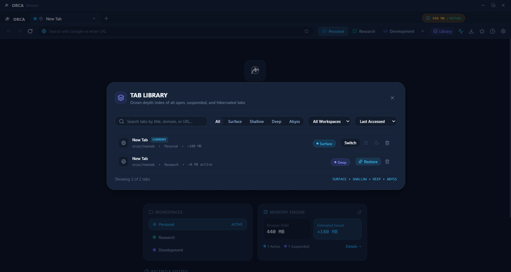

Tab Lifecycle Management
The Tab Library
Categorize active sessions into four distinct lifecycle tiers: Surface (active RAM), Shallow (idle), Deep (fully suspended WebContents), and Abyss (hibernated to disk). Keep 100+ tabs accessible without crashing your machine.
4 Tiers
Ocean Lifecycle Model
~0 MB
Deep tab RAM footprint
